Charities
Aboriginal Volunteer Program
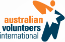
www.australianvolunteers.com www.volunteeringsa.org.au
The Aboriginal Volunteer Program was inspired by a related project described in the documentary Children of the Rainbow Serpent.
The program provides professional training and support to young Aboriginal volunteers who spend 10 weeks living in the remote Aboriginal community of Oodnadatta working to help achieve a number of goals set by the community.
Quoting from the project report:
The Aboriginal Volunteer Program is based on a successful international community- based youth-led volunteer program. For use in Australia, it was specifically designed to sit within a culturally-informed and respectful framework appropriate for Aboriginal communities and Aboriginal volunteers.
The program is delivered through a partnership between Volunteering SA&NT, Australian Volunteers International, the South Australian Aboriginal Reference Group and the community of Oodnadatta.
The results from this innovative pilot initiative have been very positive, both for the community involved and also for the volunteers themselves. We are proud to continue our support for the program into its next phase so that it “can continue to flourish in Oodnadatta as well as enhance Government and wider recognition for the positive and sustainable outcomes it achieves.”
Amnesty International
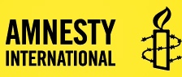
Amnesty is the world's preeminent human rights organization. It is dedicated to protecting the rights enshrined in the Universal Declaration of Human Rights.
It is “independent of any
government, political ideology, economic interest
or religion, and is funded mainly by its membership and public
donations”
(Who we
are).
We are proud to support their work.
Hands On Learning
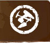
Hands on Learning “helps secondary
schools deliver an in-school program for students most at risk of leaving
school early”.
The HOL method has evolved from many years of practical experience. The evidence for its effectiveness is compelling. See for example, Positive, Practical and Productive: A Case study of HANDS ON LEARNING in action by Dr Malcolm Turnbull of the University of Melbourne's Youth Research Centre, May 2013.
Apart from the transforming effect HOL can have on the lives of the children it helps, the economic benefit to society is huge. Deloitte Access Economics published a study in September 2012 estimating that “in workforce outcomes alone, Hands On Learning has already contributed gains of $1.6 Billion to the Australian economy”.
This is a game changing initiative that we are proud to support in the hope that it will eventually be adopted by Government.
International Anti-Poaching Foundation
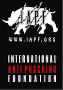
Wildlife poaching, particularly for ivory, has reached a crisis level driven by misguided, newly wealthy buyers who have driven prices in this illegal trade to unprecedented levels.
Rangers attempting to protect the wildlife now find themselves risking their very lives in an all out war with ruthless, well funded and heavily armed criminal organizations. They and the wildlife they protect urgently need our assistance.
Médecins Sans Frontières (Doctors Without Borders)
MSF “delivers emergency aid to people
affected by armed conflict,
epidemics, natural disasters and exclusion from healthcare”
(About MSF).
The “doctors, nurses, midwives,
surgeons, anaesthetists, epidemiologists,
psychiatrists, psychologists, pharmacists, laboratory technicians, logistics
experts, water and sanitation engineers, administrators and other support
staff”
who deliver this aid, often young volunteers,
can find themselves working in highly dangerous environments at great
personal risk.
1n 1999 MSF was awarded the Nobel Peace Prize for its work. We are proud to support this inspirational organization.
Murdoch Childrens Research Institute
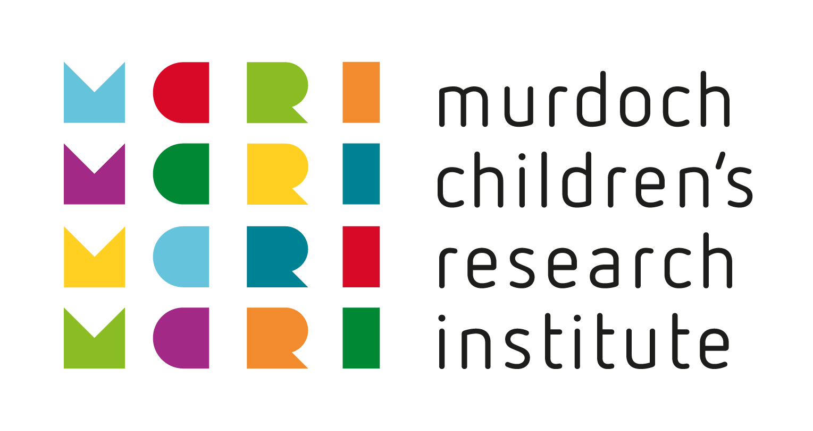
One of the stated goals of MCRI is “to be one of the
top five child health research institutes in the world”
(Vision
& Mission).
They are in an ideal environment to achieve that goal, located in
the exceptional new premises of
The Royal
Children's Hospital in Melbourne, Australia — a building
specifically designed to promote synergies between
research and clinical groups.
Quoting from their website:
Researchers at the Institute work side-by-side with doctors and nurses from our campus partners The Royal Children's Hospital and the University of Melbourne’s Department of Paediatrics. This provides our researchers with much greater interaction with patients for research and gives us the ability to more quickly translate research discoveries into practical treatments for children.
We are excited about the potential of this unusual facility, which we believe history may ultimately judge to be one of the most important of Dame Elisabeth Murdoch’s many fine legacies.
One Disease at a Time
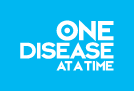
The vision of One Disease at a Time is
“to systematically target and eliminate one disease at a time”
, starting
with scabies, a
“highly contagious skin disease, which has reached epidemic proportions in
many remote Aboriginal communities”
.
Scabies can be devastating for the individual as well as whole communities. Yet it is virtually unknown in non indigenous communities. It is one more gap that needs to be closed.
One Disease is run by a talented and creative team, chasing ambitious goals and achieving encouraging results. We are proud to support them.
Oxfam
From the Oxfam website:
“As well as becoming a world leader in the delivery of emergency relief,
Oxfam International implements long-term development programs in
vulnerable communities. We are also part of a global movement,
campaigning with others, for instance, to end unfair trade rules, demand
better health and education services for all, and to combat climate
change.”
Oxfam's byline is
“Working for a future free from poverty”
.
That is work which we are proud to support.
Fitzroy Stars
The Fitzroy Stars
are a predominantly Aboriginal football club based in Melbourne.
Since 2008 they have been supported by Oxfam.
Quoting from the
Oxfam website:
“we support the Stars in their work to improve men's health, increase
positive parenting and strengthen Koori community in Melbourne.”
The benefits of this project are clearly visible. See, for example, this video. We are proud to support it financially. We have also become big fans of the football club.
Red Cross Red Crescent
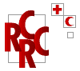
Red Cross is the iconic crisis relief agency. It also mobilizes literally millions of volunteers around the world.
Quoting from their Australian website:
Relief in times of crisis, care when it's needed most and commitment when others turn away. Red Cross is there for people in need, no matter who you are, no matter where you live.
Red Cross is an extraordinary organization that we will probably always support.
The Salvation Army
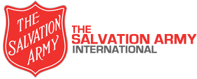
We normally do not support overtly religious charities but The Salvation Army is an exception. They seem to do things that nobody else does and to be there when nobody else is. We respect the work that they do greatly and we are proud to support them.
Save the Children
Children clearly have special needs. The founder of Save the Children, Eglantyne Jebb, believed that they should therefore have special rights which she described in 1923 in the Declaration of the Rights of the Child. Those rights evolved over the years, eventually becoming international law in 1990 as the Convention on the Rights of the Child.
Those rights are still at the heart of Save The Children’s work today. We are proud to support that work.
Scottish Love in Action
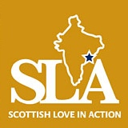
We have a family connection with the founder of SLA, Gillie Davidson. There are many worthy charities working in India, but we have close personal knowledge of the passion and dedication of Gillie and SLA.
SLA works with vulnerable children in the Indian state of Andhra Pradesh. Some of these children are Dalits - formerly known as “untouchables”. SLA funds a school and home for these children, using education as a means of breaking the cycle of poverty and discrimination.
This video is an inspiring introduction to their work.
Second Bite

Wasting food when others are going hungry is simply wrong if it can be avoided.
Second Bite works with suppliers and teams of volunteers to "redistribute surplus fresh food to community food programs around Australia".
Obviously this is a good idea - the trick is making it work, and that is exactly what Second Bite has done - with extraordinary success. We are very proud to support them.
The Smith Family
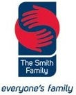
“The Smith Family believes that education is the key to changing
lives.”
Many would share that view.
What is unusual about The Smith Family is the way they work.
Quoting again from their website:
“Our support is holistic, ongoing and long term.”
They can provide children with support
“from pre-school and primary school,
to senior school and on to tertiary studies if they choose.”
This is the sort of long term commitment that
children might normally expect to receive from their own family.
However not all children are that fortunate — they may find themselves
“growing up in lone parent and jobless households”
.
The Smith Family helps fill the gap - not just for a difficult year or two
— but over a child's whole journey through the school system.
The Smith Family is indeed “everyone's family”. We believe that they are a very special and quite unique organization and we are proud to support them.
Girls at the Centre
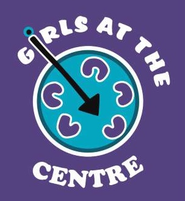
Girls at the Centre is a program to help indigenous girls in years 7-9 stay at school. Why girls in particular?
Quoting from the 2012 report The Best of Every Woman prepared by Effective Philanthropy for the AMP Foundation:
...investments in programs that help improve the health, education and wellbeing of women are often described as having a significant "multiplier effect" based on the cross-generational benefits that those investments support.
Studies have shown that where women have access to education they tend to:
- have fewer and healthier children, who are themselves more likely to go to school
- participate more in paid work, and
- invest a higher proportion of their earnings in their families and communities than their male counterparts.
The above effects tend to be magnified the higher the level of education obtained.
This project is expensive if measured in terms of the cost per girl, but not if the cross generational benefits mentioned above are taken into account. We believe that this project can help lead to long term social change and are proud to continue our support for it in the hope that it will eventually be adopted by Government.
Unicef
Like the United Nations itself, Unicef is sometimes criticized for being too large and bureaucratic. However, we had the privilege of visiting Mozambique with Unicef a few years ago and were enormously impressed by the knowledge, experience and commitment of the people working there. It is likely that Unicef will always feature in our annual giving.
University of Melbourne
Living in Melbourne, Australia we have personal connections with the University of Melbourne and usually donate to it in some form each year.
Baroque Music Performance Research Project
The aim of the Baroque Music Performance Research Project is to select attractive, high quality, neglected or newly discovered works and to research the appropriate historical performance practices leading to informed performances and CD recordings.
World Vision
World Vision is a very worthy organization that we used to support. However, in recent years we have shifted our giving to others who do similar work but who are not linked to any religious group.